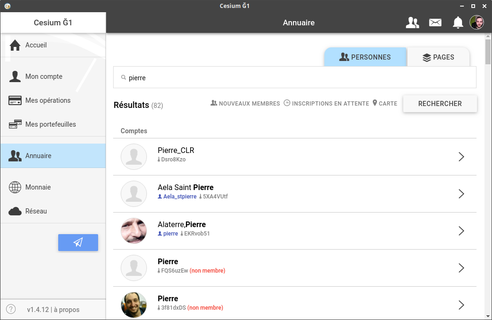

Cuando conoces gente físicamente, durante aperitivos de moneda gratis, por ejemplo, y quieres intercambiar bienes o servicios en Ğ1, puedes usar el directorio.

El directorio facilita la búsqueda de las cuentas de otras personas (o entidades).
Todas las cuentas, ya sean "cuentas de miembros" o "monederos simples", se listan en el directorio.
El directorio le permite:
Al buscar un miembro por nombre y apellido, tenga en cuenta que:
En cualquier caso, puede enviar Ğ1 a la persona equivocada.
Por lo tanto, siempre asegúrate de que, con la persona a la que quieres enviar Ğ1, la clave pública de su cuenta del monedero comience con los primeros 8 caracteres que se muestran junto al icono que representa una clave.